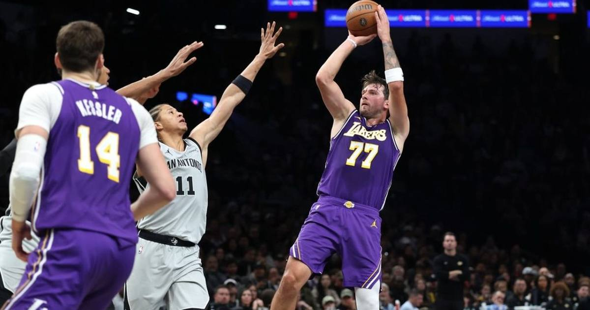

Fan shoves Luka Dončić after Spurs beat Lakers 99-96
A courtside fan shoved Luka Dončić in the tunnel at Frost Bank Center moments after San Antonio's 99-96 NBA Cup win eliminated the Lakers — over a wristband Dončić had tossed into the crowd and then went back to retrieve.

Disclosure: this post contains affiliate links. I earn a commission on qualifying purchases.
The worst moment of Luka Dončić's Friday night in San Antonio came after the game was already lost. Moments after the Spurs beat the Lakers 99-96 at Frost Bank Center, a fan in the tunnel shoved Dončić as he walked off the court — in an exchange that started with a wristband.
What happened in the tunnel
Dončić tossed a wristband into the crowd as he headed toward the locker room, something he says he does after almost every game. He then heard the fan it reached did not want it, so he turned back to retrieve it.
The man sitting beside her picked it up and handed it back — then pushed Dončić in the shoulder as he walked away. Dončić stopped and turned back toward him, and Lakers forward Jarred Vanderbilt stepped in while arena security moved in to keep it from escalating. The fan was ejected, and Dončić continued to the locker room and gave the wristband to somebody else.
> "I just threw my wristband like I do almost every game, and then I heard she didn't want it, so I went back to grab it. And he just pushed me, and then I gave it to somebody else." — Luka Dončić
Asked whether the man said anything to him, Dončić said he did not know. As of Friday night, it was not clear whether any punishment would follow from the incident.
The collapse that came first
The shove capped a brutal finish for Los Angeles. The Lakers led by 20 points in the second quarter and took a 54-38 lead into halftime, then watched San Antonio outscore them 30-14 in the third to send the game to the fourth quarter tied.
1st: 14; 27
2nd: 24; 27
3rd: 30; 14
4th: 31; 28
Final: 99; 96
Stephon Castle led the comeback for the Spurs, and Victor Wembanyama anchored it inside. Dončić led all scorers in a losing effort, but his outside shot deserted him — he made just one of his 13 three-point attempts.
Luka Dončić (LAL): 31; 6; 8
Stephon Castle (SAS): 26; 4; 9
Victor Wembanyama (SAS): 25; 16; —
Austin Reaves (LAL): 21; 8; —
What it means
This was an NBA Cup game, and the result cut both ways: San Antonio advanced to the knockout round as the West's wild card, while Los Angeles was eliminated from the tournament. The loss dropped the Lakers to 15-4.
There is no time to sit with it. Los Angeles returns to the floor Sunday on the road in Memphis — with the league certain to review video of a fan putting a hand on one of its biggest stars.
Watch
Source: LAKERS at SPURS | EMIRATES NBA CUP 🏆 | FULL GAME HIGHLIGHTS | November 27, 2026 — NBA. Official full game highlights from the matchup, including the Spurs' second-half comeback.
Sources
• Sports Illustrated: Fan Shoves Luka Dončić in Heated Postgame Exchange Following Lakers' Loss
• USA Today: Fan pushes Luka Dončić during postgame confrontation in loss to Spurs
• Reuters: Spurs edge Lakers, sneak into NBA Cup knockout stage
• New York Post: Spurs fan shoves Luka Doncic in wild exchange
Gear up: Fanatics